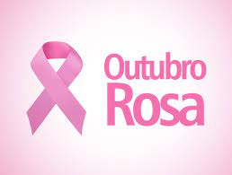

O movimento internacional de conscientização para a detecção precoce do câncer de mama, Outubro Rosa, foi criado no início da década de 1990, quando o símbolo da prevenção ao câncer de mama — o laço cor-de-rosa —
O Outubro Rosa é um movimento que tem como objetivo principal alertar a todos a respeito do câncer de mama e da importância de um diagnóstico precoce. O laço rosa é símbolo do Outubro Rosa, movimento que busca alertar a população sobre o câncer de mama.